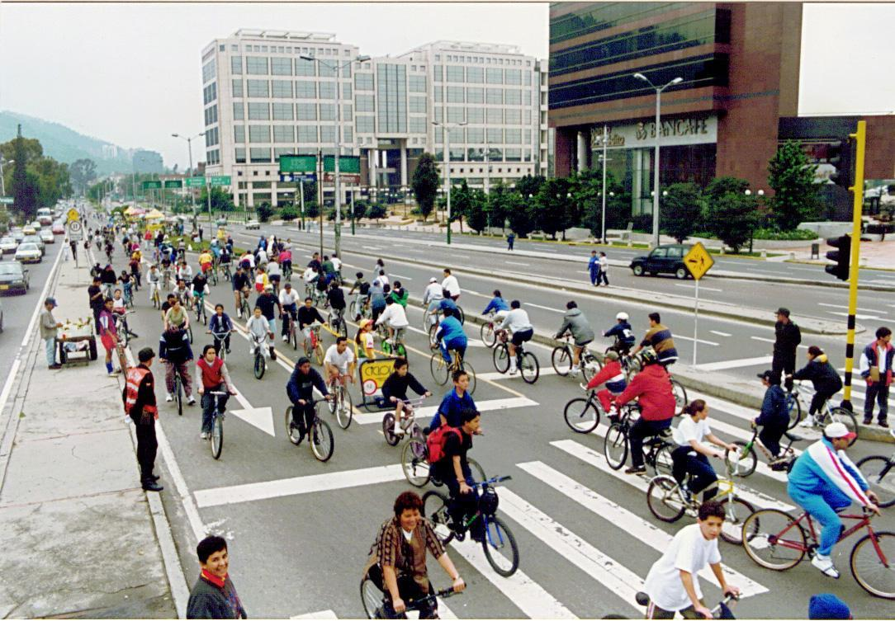

La primera bicicleta, fabricada con madera,
se llamaba draisina porque la inventó Karl Drais en 1817.
No tenía pedales: había que empujarla con los pies en el suelo.
Un herrero escocés llamado Kirkpatrick Macmillan creó la primera máquina con pedales y dos ruedas en 1839.


La bicicleta para muchos hombres siempre ha sido
una herramienta indispensable para desarrollar su trabajo
o para transportarse de un lugar a otro, uniendo comunidades
aisladas y de esta manera manteniéndolas comunicadas
La bicicleta, una buena alternativa para tu salud Cuida el planeta,
anda en bicicleta. Tus hijos quieren respirar, por ellos hazlo, propio.
La bicicleta inglesa cuenta con múltiples versiones.
En este apartado nos referimos a la principal, la roadster
Este modelo es ideal tanto por campo como por ciudad.
Cuenta con ángulos de cuadro relajados
(unos 68 grados) y puede o no presentar marchas
En el caso de que sí las presente, suele tener tres velocidades
Posee ruedas 700 las ruedas de menor grosor y mayor diámetro que existen
La bicicleta plegable, cuyo primer antecedente se remonta a finales del siglo XIX
incorpora una serie de bisagras o codosen el cuadro que permiten doblarla con facilidad
para que ocupen un espacio más pequeño
Gracias a esta característica,
esta tipología favorece y mucho su transporte
¡te la puedes llevar a cualquier lado!
Este tipo de bici facilita mucho el transporte en extensos territorios
y es una alternativa al coche para evitarte el tráfico
que suele darse en los núcleos de población destacados
¿Cuáles son las cualidades principales de la bicicleta eléctrica?
La principal es la combinación del pedaleo con la asistencia de un motor eléctrico
Las características externas de este vehículo permiten
que todo aquel que monte en la bici pueda adoptar una
postura aerodinámica que favorece la rapidez del desplazamiento
y la transmisión de potencia a los pedales. Los neumáticos
estrechos de alto rendimiento son de grandes pulgadas,
algo que también favorece la velocidad de desplazamiento.
En 1943, el químico suizo Albert Hofmann
realizó un experimento en el que él mismo se atrevió a probar
la dietilamida de ácido lisérgico (LSD) -en pequeñas cantidades
y de manera voluntaria- para determinar sus efectos en el cuerpo humano.
Tras la prueba, Hofmann experimentó
alteraciones de la percepcióny tuvo que pedir a su ayudante que le acompañase a casa.
En aquella época la Segunda Guerra Mundial aún no había finalizado
y el desplazamiento en vehículos motorizados estaba prohibido,
así que ambos tuvieron que hacer el camino de vuelta en bicicleta
Quieres saber mas del tema da clic


 1
1 2
2 3
3 5
5